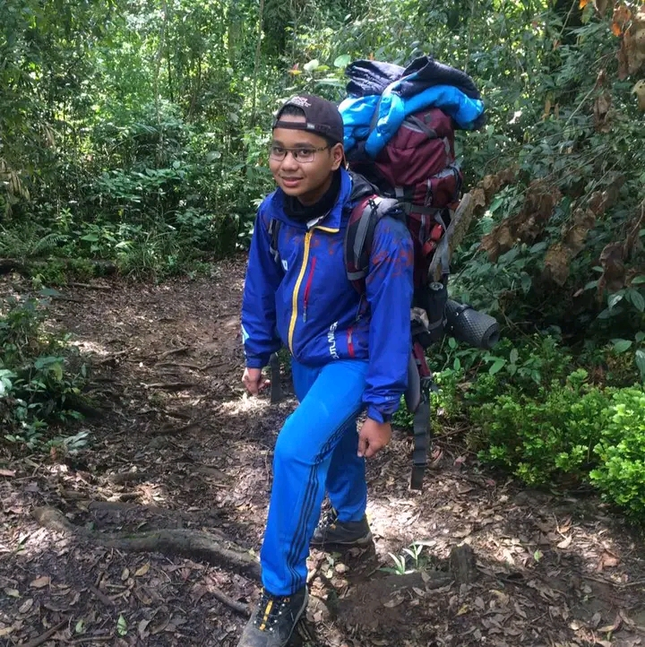

I'm Josse Surya Pinem
I'm 21 Years Old
I'm Front-end Developer
Hallo,Temen" perkenalkan Nama gw, Josse surya Pinem biasanya gw dipanggil Josse. Saya sekarang tinggal dimedan, kesibukan saya saat ini sedang kuliah di salah satu kampus swasta yang ada di Medan, selain itu gw sedang ikut Program Kampus Merdeka,serta ngulik" bootcamp teknologi dengan beasiswa dan sedang skripsian juga, dengan program wisuda tahun 2023
Hobby
Saya juga Memiliki hobby yaitu :
Hiking
- Hiking kalau didefiniskan merupakan kegiatan yang agak lumayan ekstrem yaitu kita mendaki gunung" dari awal sampai puncak, seperti itu sederhananya , Mendaki itu sangat mengasyikan , apabila kita sudah sampai di puncak maka kita dapat melihat sunrise ataupun sunset yang Tuhan ciptakan, mendaki membuat kita bersyukur atas apa yang di berikan nya kepada kita, dan pastinya membuat kita lebih sehat lagi, dan biayanya cukup terjangkau dibanding pergi-pergi keluar negri hehehehehe....
Ngoding
- Ngoding ataupun programming merupakan kegiatan yang menurut aku mengasyikan ,iseng-iseng berhadiah , kalau ditanya apakah ngoding sulit? pastinya Iya, disitu aku tertantang dan aku suka tantangan seperti logika, carousel disamping, sidebar, dan lain". Kalau ditanya apakah aku bisa full-stack? Ya, bisa" aja, cuman ditanya mana yang lebih suka, aku jawab front-end, karena aku akan menunujukkan bahwa don't judge book by it's cover that's totally wrong wkwkwkwkw. karena cover website menunjukkan bahwa siapa diri kita sebenarnya, dan bagaimana kualitas karya kita.
Music
- Bermain musik merupakan Hobi aku, walupun aku pun bukan musisi yang jago" amat heheheh, aku juga pernah melayani di gereja , biasanya aku menjadi bassist , disaat latihan musik , aku merasa bahagia apabila semua arrasemenya masuk ditelinga dan di hati dan pastinya orang" ataupun jemaat senang melihat kita
Keahlian